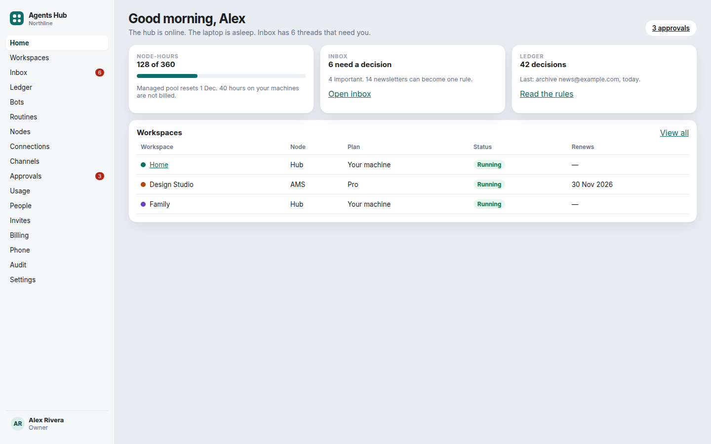
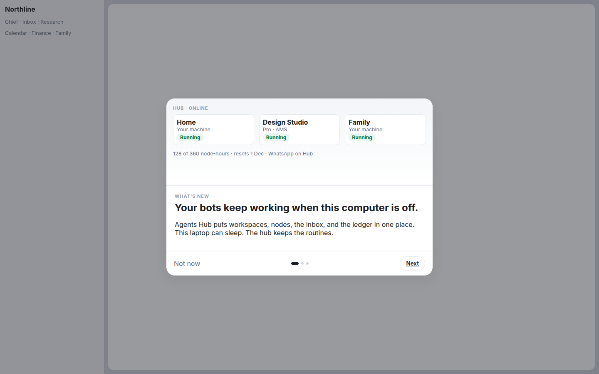
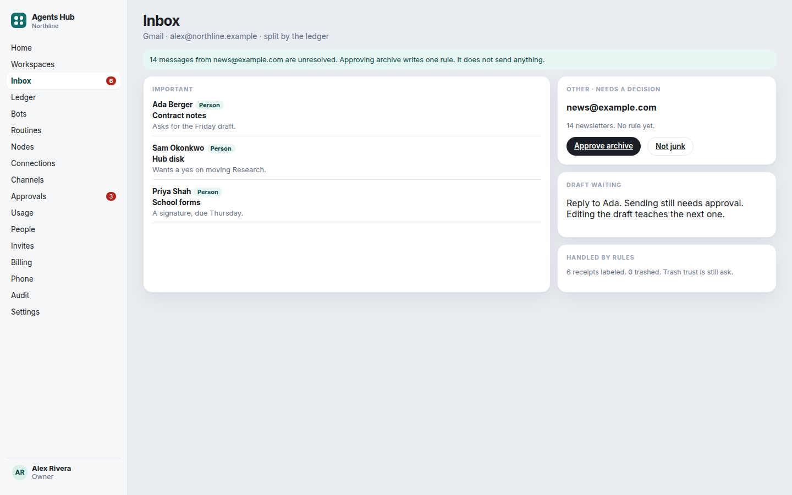
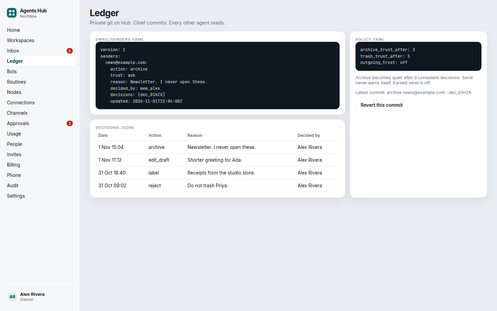
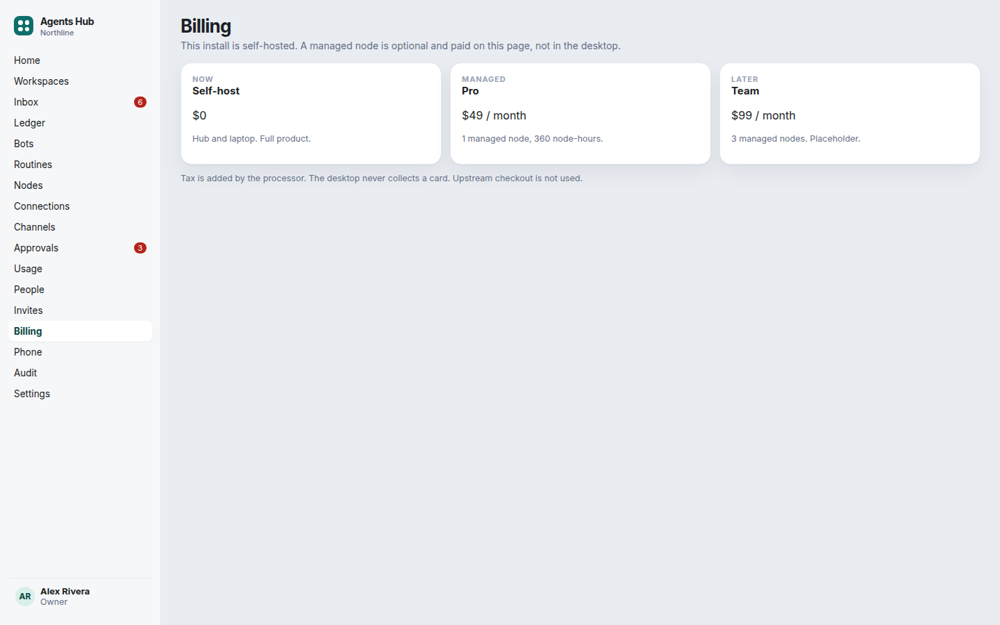
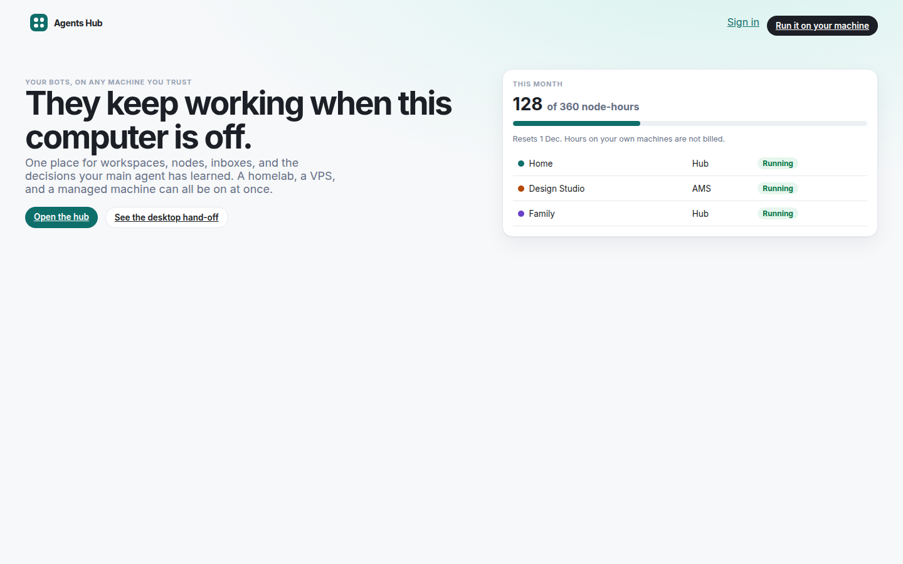
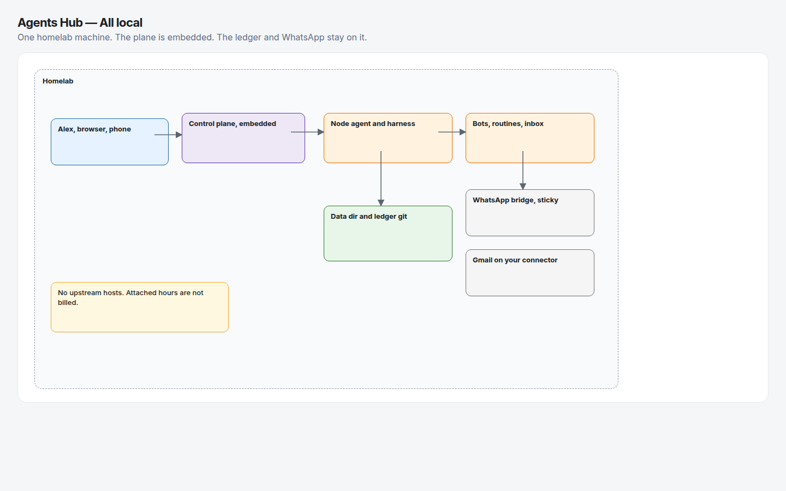
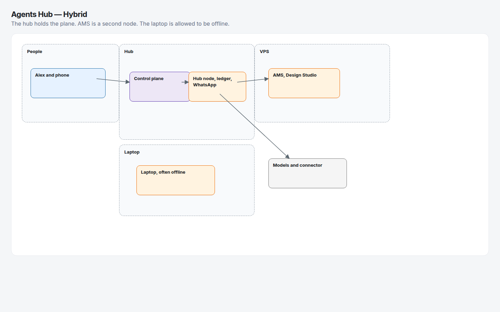
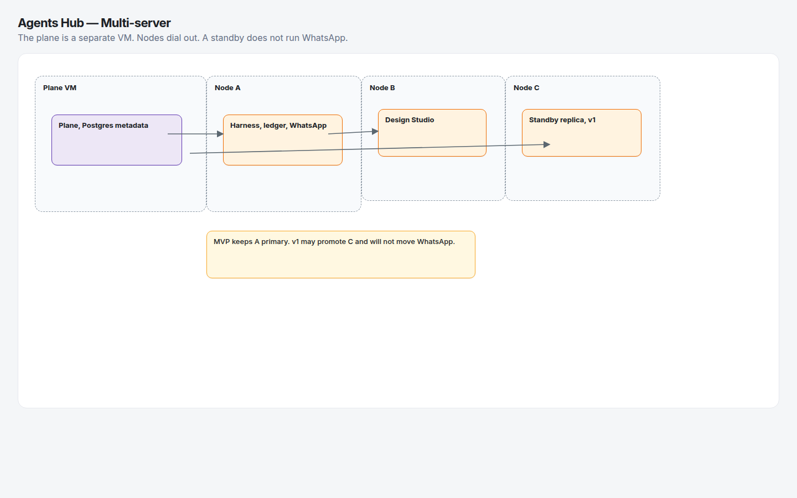
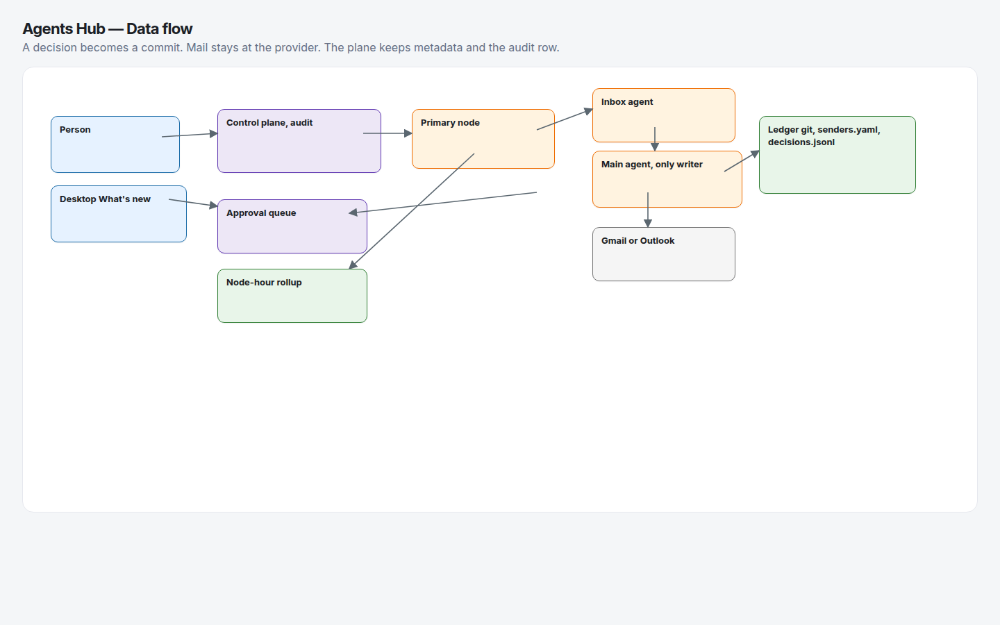

What this is
The fork already has bots, routines, approvals, a phone, Tailscale, and a one-machine Cloud client. Agents Hub keeps the harness and adds a plane, nodes, a private git ledger, and an inbox. The full write-up is in the PRD, the specs, and the flows. Tickets: 46 across 17 epics.
| Keep from upstream | Replace |
|---|---|
| Bots, routines, approval cards, phone pairing, encrypted backups, bring-your-own model | The What’s new modal, Cloud Pro checkout, included Boat and trial AI, PostHog, their Composio broker, their updater |
| Per-cloud plans and a used/included hour meter, as an idea | Hours become node-hours. Only managed nodes draw the pool. The desktop does not take payment. |
Mockups






Every page is in 06-prototype/index.html and screens/.
Topologies




How the new loops work
- Learning loop. A keep, archive, trash, label, approve, reject, or draft edit becomes one git commit. The line has action, reason, decided_by, and date. Other agents read the compiled YAML and ask only on a miss.
- Inbox triage. New Gmail is split into Important and Other. A matching archive rule is applied. Anything new waits.
- Approving cleanup. Fourteen newsletters are one card. Approving writes the rule and archives those messages. Sending is a different card.
- What’s new. The desktop carousel hands off to the website. Checkout is not in the app.
Decisions
License, short version
The fork outside enterprise/ is Apache-2.0, so a commercial service and an open-source release are both allowed if notices stay and changes are marked. The license does not grant the OpenMausBot or Maus names. enterprise/ is a different license and is not part of this product. This is not legal advice. See 00-research.md.